13
La Motha
Xmas Gravel Ride
La pedalata di Natale in gravel, con Zero 5 Bike Team.
Domenica 13 dicembre

Post evento del 13 dicembre, 1080×1350 · l'arco nel colore fisso del 13 (azzurro), il nome dell'evento, la descrizione e il giorno (il luogo è nel carosello). PNG pronto da pubblicare: post/2026-12-13-gravel-ride.png.